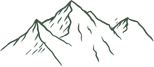
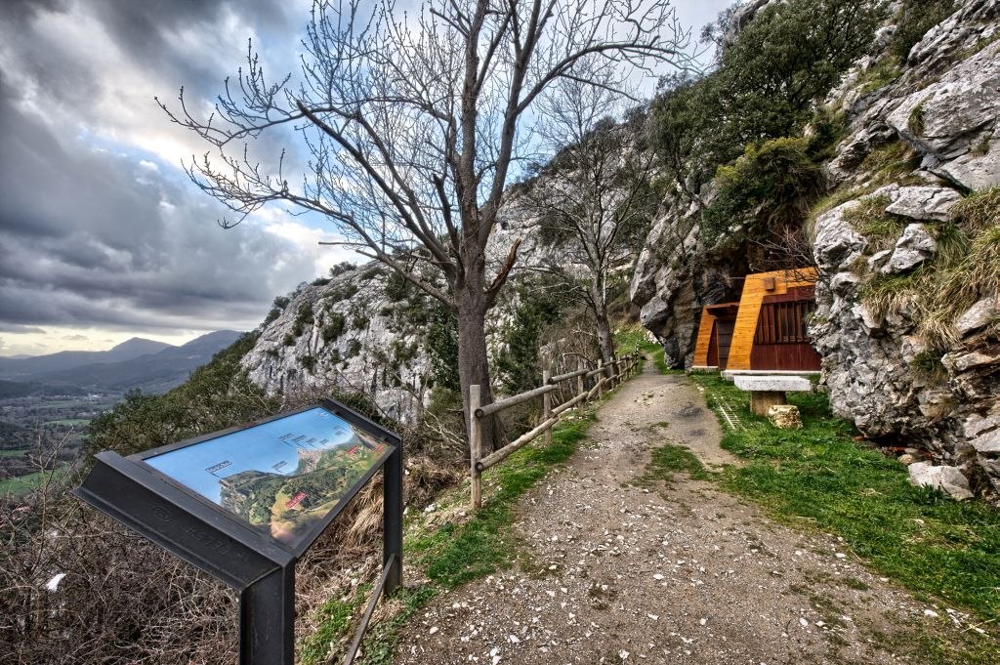
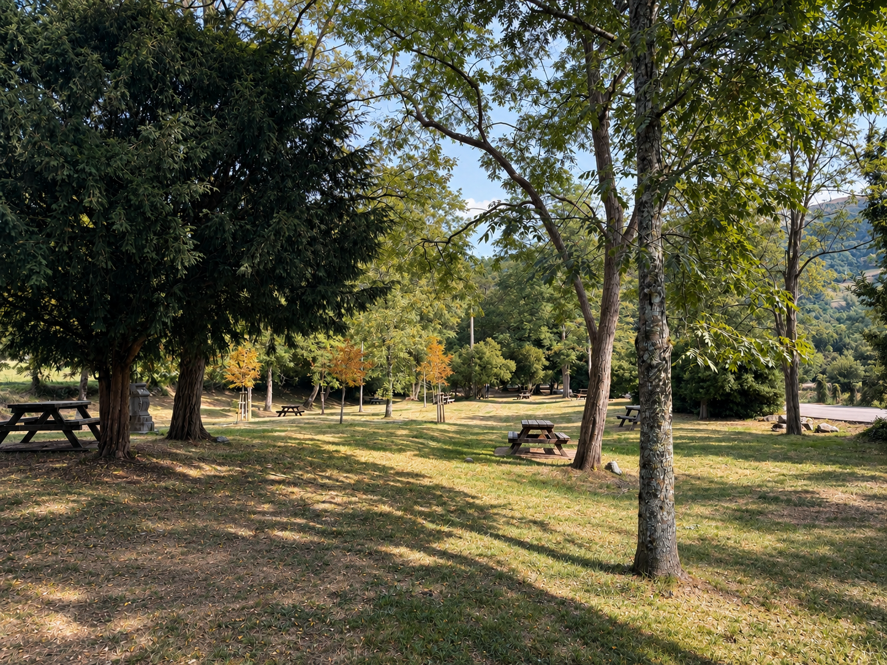
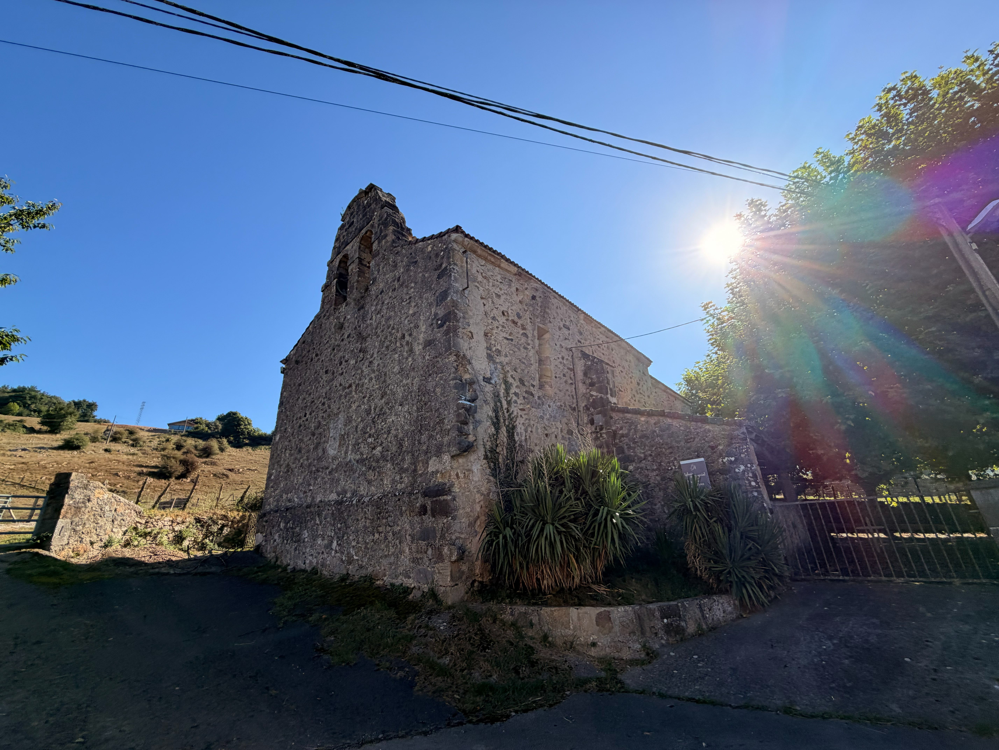
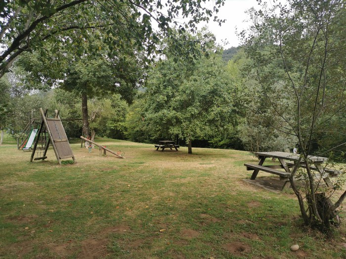

Guía de Paseos Naturales

RAMALES DE LA VICTORIA
Orientación
Todas las rutas de un vistazo
Paseos

6 km · 1h · 254 m

7 km · 1h 30min

4,7 km · 50 min

4 km · 45 min
1,26 km · 15 min · 42 m
3,5 km · 1h